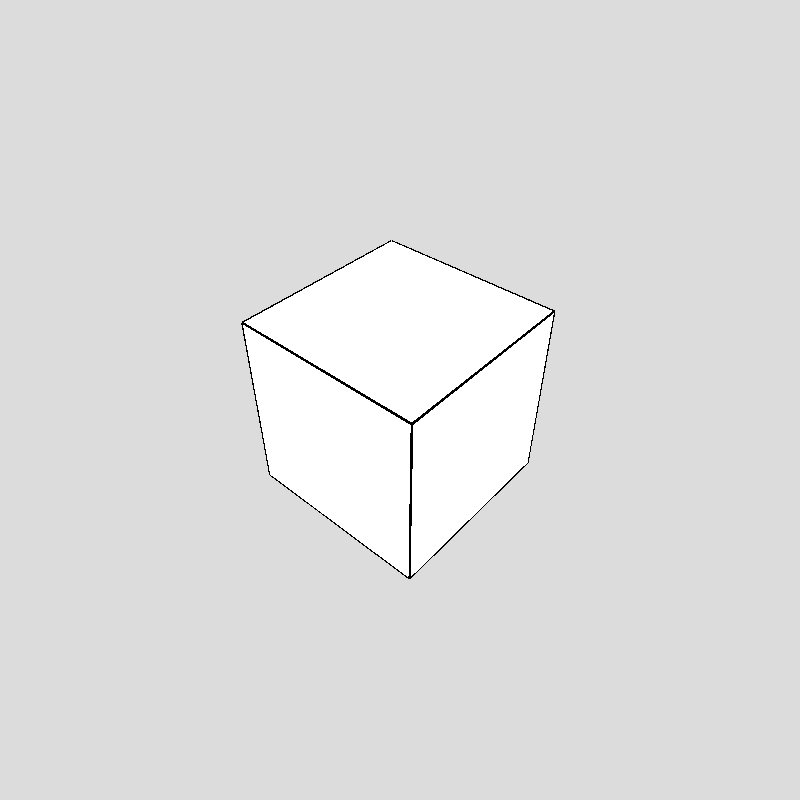

Experiment 5: 3D Graphics
Imitate
for Imitate, I wanted to imitate something really simple in a really interesting way. I decided to replicate a simple spinning cube.
https://editor.p5js.org/Francesca.Fabian/sketches/Syfq0rE0Q
This is my replicated version. Click to start:
https://editor.p5js.org/coco558/sketches/1PitESR-O
This is interesting because I used ray tracing to render the cube. in this verion, I used uniforms to get the data for all of the triangles, and I used the math from here: https://courses.cs.washington.edu/courses/csep557/10au/lectures/triangle_intersection.pdf My raytracing algorithm sends a ray out from each pixel and draws the color of the closest triangle it hits. Each triangle gets a random color when it's first created. At this point, I was reading my mesh data from an obj file, but only really simple ones. it only read vertexes and triangles in their simplest form.
Integrate
I decided to implement depth into my program. Because I was using raytracing, I already was getting location data for each pixel. Click to start:
https://editor.p5js.org/coco558/sketches/eB_0Wf3z9
I just used the depth I was already using for occluding triangles to make further pixels darker. I am multiplying the inverse of the distance with the color.
Innovate
For my innovation, I decided to experiment more with depth. I took the modulus of the depth to create bands and I inverted the colors in those bands. Click to start:
https://editor.p5js.org/coco558/sketches/jU2qkm9Zb
I then wanted to allow more types and sizes of models to be added. Uniforms have a very small limit to how many can exist simultaneously, so I decided to store the vertex data in a texture. I used this library for it. for the final version. I also used the normal of the collision to get some interesting colors. Scroll and move the mouse to interact with it. Click to start:
https://editor.p5js.org/coco558/sketches/QJD9MEofD
Reflection
I have been wanting to work on something like this for a long time. I didn’t have time to implement all the features I wanted to, such as reflections and textures, but I might build on it for future experiments. The hardest part of this for me was reading vertices from a texture the way I wanted to. I could have just used the basic p5 way of doing it by using an image, but then I wouldn't have control over the way the texture stored my data. I specifically wanted floats because that's how obj files are stored, and it makes the vertex positions a lot more precise. I eventually found the library linked above, and that solved my problem. I think that If I had more time, I would also make it run more efficiently because, with large models, it doesn't run very fast.